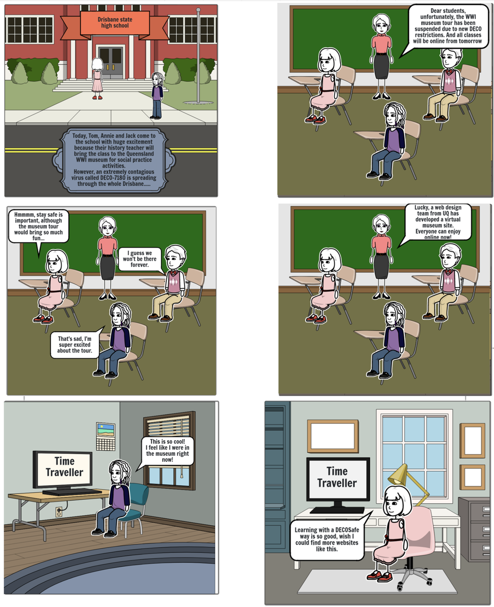

Proposal Documentation
I assisted my teammates on giving them feedback about how much time and level of difficulties to turn their idea into practice. Meanwhile, I did some research to the existing products like 3d timeline mainly focusing on the British Museum site. For demo reasons, I made a storyboard that assemble the problems that could be encountered with 9 years old students as well as how our web page solving it. I also did some general purpose work at this stage like manage bibliography and adding potential animations.
